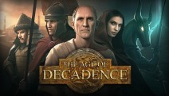
What is Age of Decadence
The Age of Decadence is a turn-based, hardcore role-playing game set in a low magic, post-apocalyptic fantasy world. The game features a detailed skill-based character system, multiple skill-based ways to handle quests, choices & consequences, and extensive dialogue trees.
What is the story of Age of Decadence
The Age of Decadence is not a game about killing monsters or exploring mystical lands, but rather, surviving amid the greed and brutality of your fellow humans and carving out a name for yourself. Good and bad are purely relative. It’s a world of scheming and backstabbing in which your words and actions have the potential to forge alliances and sow discord, and your path is never certain.
You get to play with seven different factions: three Noble Houses and four 'professional' guilds: merchants, assassins, thieves, and the army, all fighting for power or influence; over 100 named characters, over 750 ‘generic’ characters with unique IDs taking part in violent take-overs, assassinations, and power grabs, and over 600,000 words of dialogue: a well-developed and thought through world, believable characters, realistic motivations, but no elves, dwarves, magic, and wizards in fashionable, pointy hats.
Where to buy:
Steam
GoG
Social Media:
Forum
Website
Guide
Wiki
Builds:
Reddit
Steam
IronTower
Gamefaqs
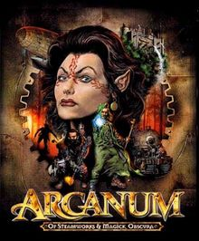
What is Arcanum
Arcanum is the first of three cRPG's made by Troika Games. It is set in the world of Arcanum, a magical fantasy world that is going through an industrial revolution. Technology and Magic interfere with each other. Often times leading to conflict between industrial minded people and magical minded people.
What is the story of Arcanum
You are a passenger on a Zeppelin when suddenly your Zeppelin is attacked. The Zeppelin crashes and you wake up to find that the only person still alive is a gnome who asks you to deliver a silver ring to a "boy." The Gnome then dies, making you the sole survivor of the crash. Thus your journey begins.
Where to buy:
Steam
GoG
Wiki
Overview of Arcanum's Character Construction Elements
Arcanum mods and unofficial patches
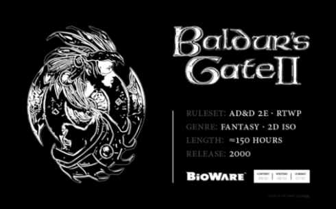
What is Baldur's Gate
Baldur's Gate is a series of games that are based on the Forgotten Realms setting. The games scale from low level to high level DnD gameplay. Baldur's Gate 1 and 2 use a modified version of the Second Edition of Advanced Dungeons and Dragons Rule Set. Both Baldur's Gate 1 and 2 use a Real Time gameplay system with Pause. Baldur's Gate 3 on the other hand is not a direct sequel to Baldur's Gate 1-2. But Larian's take on adapting the DnD 5th edition rules to a video game format. Baldur's Gate 3 uses a Turn Based gameplay system.
What is AD&D
Released around 1977 and 1979. Game rules were reorganized and re-codified across three hardcover rulebooks, compiled by Gary Gygax, incorporating the original D&D rules and many additions and revisions from supplements and magazine articles. It had three core rulebooks The Monster Manual (1977), the Player's Handbook (1978), and the Dungeon Master's Guide (1979). Major additions included classes from supplements like assassin, druid, monk, paladin, and thief, while bard, illusionist, and ranger, which had previously only appeared in magazine articles, were added to the core rulebooks. An alignment system with nine alignments was used, rather than the previous three-alignment system in the original D&D rules.
Learn more about AD&D here.
What is D&D 5E
Fifth Edition is comparatively a more streamlined edition compared to the other entries. Not necessarily dumbed down. However, a lot of the jagged edges and needlessly complicated elements have been toned down. According to D&D Lead Designer Mike Mearls a lot of rules decisions came down to driving the action to the table rather than to the books. Meaning cutting down on rules that required brute force memorization. Essentially serving to be a better place for newcomers to start in.
Learn more about 5E here.
What is the Story of Baldur's Gate 1
You're a fostered child to the mage Gorion. You were raised in Candlekeep for all your life. One day, Gorion forces you to leave under unexplained reasons. During night time you and Gorion get ambushed by a mysterious figure. losing your father and your childhood home. You're forced out in the world by your lonesome self. Take part in a grand conspiracy that threatens an all out war with neighboring regions. And discover your unknown heritage!
Where to buy:
Steam
GoG
FAQ
Wiki
General Resources
What is the Story of Baldur's Gate 2
Hunted down. Kidnapped. And held prisoner. You and your party become play things to an evil mage. Irenicus. However, you and your party manage to take advantage of a major conflict. And break yourselves out. As soon as you manage to escape, your best friend, Imoen, gets kidnapped by Irenicus. Take part in a huge high level story as you rescue your best friend and learn what it truly means to be a Bhaalspawn.
Where to buy:
Steam
GoG
FAQ
Wiki
General Resources
Protraits:
Where to get them. How to add new protraits.
What is the Story of Baldur's Gate 3
The mind flayers have found a way to make ships that allow them to travel between worlds, and now they are invading. You and a few others have been captured. Infected by a parasitic tadpole that threatens to turn you into a mind flayer. You're left with no option, but to find a way to reverse the process. Lest you lose your humanity...
Where to buy:
Steam
GoG
Wiki
Website
Forum
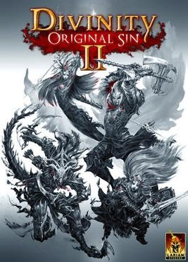
What is Divinity: Original Sin
Divinity: Original Sin is a series of games developed by Larian Studios. In total, there are only two Original Sin games. The games use a Turn Based gameplay system. Their main features include online cooperative mode, robust modding tools, and other key features to pull new comers into the RPG genre. If you're new to the genere, considering dipping your toes with these games!
What is the story of Divinty: Original Sin 1
You play two Source Hunters who devote their lives to ridding a mysterious energy known as Source from the world of Rivellon. A routine murder investigation unfolds into a much larger and dangerous adventure and the fate of something much larger is placed into your hands.
Where to buy:
Steam
GoG
Wiki
Forum
What is the story of Divinty: Original Sin 2
You're a Sourcerer who was captured by the Divine Order and sent to an island prison known as Fort Joy. On the way there, a gigantic Kraken Voidwoken attacks and sinks the ship, but the player character is saved by a mysterious voice, who calls the player "Godwoken"; and thus your journey begins...
Where to buy:
Steam
GoG
Wiki
Forum
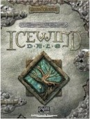
What is Icewind Dale
The Icewind Dale series is a duology of games focusing on the Icewind Dale region within the greater Forgotten Realms setting. Both boast a fully creatable party from the start and have a gradual rise in difficulty from low-level adventuring to high-level adventuring. It uses a slightly modified version of the AD&D 2nd Edition ruleset, while II used D&D 3rd Editions ruleset. Both are strictly RtwP.
What is AD&D
Released around 1977 and 1979. Game rules were reorganized and re-codified across three hardcover rulebooks, compiled by Gary Gygax, incorporating the original D&D rules and many additions and revisions from supplements and magazine articles. It had three core rulebooks The Monster Manual (1977), the Player's Handbook (1978), and the Dungeon Master's Guide (1979). Major additions included classes from supplements like assassin, druid, monk, paladin, and thief, while bard, illusionist, and ranger, which had previously only appeared in magazine articles, were added to the core rulebooks. An alignment system with nine alignments was used, rather than the previous three-alignment system in the original D&D rules.
Learn more about AD&D here.
What is D&D 3E
Published in 2000 with it's 3.5 Edition being released in 2003, this edition would replace THAC0 with a newly ubiquitous D20 mechanic for determining the outcome of rolls. This edition would boast the inclusion of over 200 playable races, 52 unique bases classes and 782 officially recognized prestige classes.
Learn more abour D&D 3E here.
What is the story of Icewind Dale 1?
All is not well in the frigid tundra of Icewind Dale. A mysterious force has begun exerting its influence upon the land itself, snuffing it of warmth and rousing its savage inhabitants against all who dare seek to uncover its sinister goal. Only your party of fearless adventurers stands a chance at fighting this resurgent evil, and halting its sinister plans that if allowed to bear fruit threaten to plunge not only the North, but all of Faerun into chaos.
Where to buy:
Steam
GoG
Wiki
FAQ
General Resources
What is the story of Icewind Dale II
War in the North! 30 years following the resolution of Icewind Dale I, a new evil threatens the icy region of Icewind Dale. A murderous alliance of monstrous armies known as the Legion of the Chimera, led by the villainous cambion twins Isair and Madae seek to assert their control over the region and eradicate any who dare stand in their way. Heeding the call of the besieged Ten Towns of Icewind Dale, your party of mercenaries must combat the legion, thwart their schemes and take down their cunning leaders.
Where to buy:
GoG
Wiki
FAQ
General Resources
Why is there no Enhanced Edition for Icewind Dale II? The source code was lost.
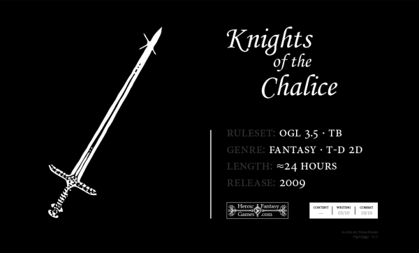
What is Knights of the Chalice 2
Chalice 2 uses the OGL 3.5 ruleset. From the developer himself, "KotC 2 is an attempt at reconstructing the very best aspects of the following games: Dark Sun The Shattered Lands, Champions of Krynn, Temple of Elemental Evil, Baldur's Gate II Shadows of Amn, Neverwinter Nights 2, and Broken Sword The Shadow of the Templars. All but one of the games cited above are Dungeons & Dragons video games. Hence, it is very appropriate for KotC 2 to use the OGL 3.5 ruleset".
What is the story of Chalice 2: Augury of Chaos
Your characters start the game in an underground area which they discovered as they were looking for treasure in the dangerous sewers complex located underneath the village of Finchbury. They soon find themselves caught up in a deadly conflict with a powerful group of evil worshippers, the Circle of the Black Rose.
Where to buy:
Official Site
A list of Chalice 2's features.
FAQ
Forum
General Resources
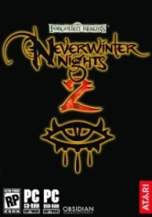
What is Neverwinter Nights
Neverwinter Nights is an adaptation of the D&D 3.5 ruleset to a 3D video format released in June 2003. Its engine, the Aurora engine, was designed so that anyone who could learn the toolset could make their own campaigns and share them with others. The original campaign takes place in the Forgotten Realms setting in the countryside around Neverwinter. Neverwinter Nights 2 is an indirect sequel to Neverwinter Nights made by Obsidian entertainment release in 2006. It runs off a modified version of the Aurora engine that had a more complicated toolset. As such its community made campaigns are sparse compared to Neverwinter Night's community campaigns. It has three official campaigns.
What is D&D 3.5E
In July 2003, a revised version of the 3rd edition D&D rules (termed v. 3.5) was released that incorporated numerous small rule changes, as well as expanding the Dungeon Master's Guide and Monster Manual. This revision was intentionally a small one focusing on addressing common complaints about certain aspects of gameplay, hence the "half edition" version number. The basic rules are fundamentally the same, only differing in balancing. Many monsters and items are compatible (or even unchanged) between those editions. New spells are added, and numerous changes are made to existing spells, while some spells are removed from the updated Player's Handbook. New feats are added and numerous changes are made to existing feats, while several skills are renamed or merged with other skills.
Learn more about D&D 3.5E here.
What is the story of Neverwinter Nights 1
The story begins with the PC, under the guidance of Lady Aribeth, being sent to recover four creatures (dryad, intellect devourer, yuan-ti, and cockatrice), known collectively as the Waterdhavian creatures. The Waterdhavian creatures are needed to make a cure for the Wailing Death, a plague that is sweeping the city of Neverwinter and forcing a quarantine. Neverwinter Nights also has a few official modules with stories not related the OC. Either they are included with NwN or they are separately purchased modules such as Darkness over Daggerford.
Where to buy:
Steam
GoG
Builds
What is the story of Neverwinter Nights 2
The story begins with the PC being a foster son of Daeghun, an elf hunter, in the village of West Harbor located in the swamp south of Neverwinter. The PC is going to come of age and he goes to have fun with his/her friends Bevil and Amie during the annual harvest festival. After all the festivities you retire to rest when Bevil runs into your house to warn you that the village is under attack.
Where to buy:
GoG
Builds
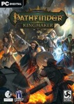
What is Pathfinder
Pathfinder is a fantasy role-playing game that was published in 2009 by Paizo Publishing. Pathfinder is based off of DnD 3.5 with modifications to the system.
Learn more about Pathfinder here.
What is Pathfnder: Kingmaker
Pathfinder: Kingmaker is an isometric role-playing game developed by Russian studio Owlcat Games and published by Deep Silver, based off of Paizo Publishing's Pathfinder: Kingmaker Adventure Path.
What is the story of Kingmaker
Explore and conquer the Stolen Lands, a region that has been contested territory for centuries: Hundreds of kingdoms have risen and fallen in these lands, and now it is time for you to make your mark—by building your own kingdom! To do so, you’ll need to survive the harsh wilderness and the threat of rival nations… as well as threats within your own court.
Where to buy:
Steam
GoG
Wiki
Call of the Wild
This mod introduces a plethora of new classes and archetypes for existing classes. A whole bunch of new feats for all that build making! Rage powers for all your barbarian needs. It also includes a whole bunch of other stuff too. This is a highly ambitious mod that adds a lot of exciting content to Pathfinder: Kingmaker.
Github Page Nexus
What is Pathfinder: Wrath of the Righteous
Wrath of the Righteous is an isometric game based off of Paizo Publishing's Pathfinder: Wrath of the Righteous Adventure Path. The Adventure Path's main features are the Mythic System which greatly impact and enchance gameplay. A feature that the video game adaption will have.
What is the story of Wrath of the Righteous
Embark on a journey to a realm overrun by demons. Lead a crusade against the demon scourge and force them back! Rise to power by choosing one of eight available Mythic Paths. Master their abilities and change the world around you as an Angel, a Lich, a Trickster, an Aeon, a Demon, Swarm that Walks, Gold Dragon, or an Azata. Each Mythic Path leads to unique skills and appearance, and greatly impacts the game’s story.
Kickstarter
What is Pillars of Eternity
Pillars of Eternity is a series of role-playing games that features a party-based real-time-with-pause tactical gameplay, fixed isometric user interface for the game-world with two-dimensional pre-rendered backdrops, in a similar vein as its spiritual predecessors Baldur's Gate, Icewind Dale series and Planescape: Torment. The games do not reward experience points for killing enemies, only for completing quests and discovering new areas. This means that non-violent approaches such as stealth are just as rewarding. It uses its own custom rule set, unlike most cRPGs.
Learn more about Pillars of Eternity here.
What is the story of Pillars of Eternity 1
The story takes place in the world of Eorah. You are a foreigner who arrives in the Dyrwood. Your caravan is hit by a mysterious storm that kills everyone save for yourself. Taking refuge in a cave, you witnesses cultists perform a ritual on a machine. Exposed to unknown energies emerging from the mysterious machine. You are then able to read and see the souls of dead people. Thus becoming an Awakened. However, if you don't hunt down the cultists who caused this, you will eventually go insane from this affliction.
Where to buy:
Steam
GoG
What is the story of Pillars of Eternity 2: Deadfire
Deadfire is a direct sequel to Pillars of Eternity. The story begins five years after the events of the first game. Eothas, the god of light and rebirth who was believed dead, awakens under the player's stronghold Caed Nua from the first game. Eothas' awakening is extremely violent, and he destroys Caed Nua, while he drains the souls of the people in the surrounding area. A piece of your soul gets torn out during the attac. In this near-dead state, you are contacted by Berath, the god of death, who offers to restore your soul if you agree to become her herald and pursue Eothas. Thus the hunt for Eothas takes you to the famed Deadfire Archipelago, where you must try to seek out answers.
Where to buy:
Steam
GoG
Pillars of Eternity Forums
Builds
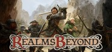
What is Realms beyond: Ashes of the Fallen
Realms Beyond is a classical game inspired by other fantasy role-playing games. It features turn-based combat and a party system that allows you to control up to six characters at any one time. It uses the OGL of DnD 3.5E.
What is D&D 3.5E
In July 2003, a revised version of the 3rd edition D&D rules (termed v. 3.5) was released that incorporated numerous small rule changes, as well as expanding the Dungeon Master's Guide and Monster Manual. This revision was intentionally a small one focusing on addressing common complaints about certain aspects of gameplay, hence the "half edition" version number. The basic rules are fundamentally the same, only differing in balancing. Many monsters and items are compatible (or even unchanged) between those editions. New spells are added, and numerous changes are made to existing spells, while some spells are removed from the updated Player's Handbook. New feats are added and numerous changes are made to existing feats, while several skills are renamed or merged with other skills.
What is the story of Realms Beyond
Revolving around a fantasy world, The Realms Beyond puts players in control of a multitude of familiar factions with several interesting twists of their own as they battle against each other in a bid for power.
Learn more about D&D 3.5E here.
Where to buy:
Steam
GoG
Kickstarter
Forum
Website
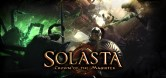
What is Solasta: Crown of the Magister
Create your very own party of adventurers with our Character Creation Tool in the classic tabletop RPG tradition. Delve into long forgotten dungeons to unearth ancient artifacts. Fight monsters in squad-level, turn-based, tactical combat. Solasta's dynamic environment offers some interesting tactical options. Bridges can collapse, leaving enemies stranded and vulnerable. Walls and columns can be pushed over - on top of your foes, if you do it right. The world is your playground. The game uses the D&D 5E ruleset.
What is D&D 5E
Fifth Edition is comparatively a more streamlined edition compared to the other entries. Not necessarily dumbed down. However, a lot of the jagged edges and needlessly complicated elements have been toned down. According to D&D Lead Designer Mike Mearls a lot of rules decisions came down to driving the action to the table rather than to the books. Meaning cutting down on rules that required brute force memorization. Essentially serving to be a better place for newcomers to start in.
Learn more about D&D 5E here.
What is the story of Solasta: Crown of the Magister
Discover the shattered world of Solasta. Explore dangerous ruins and dungeons for loot, learn the truth of an age-old cataclysm - and stop it from happening again.
Where to buy:
Steam
Kickstarter
Website
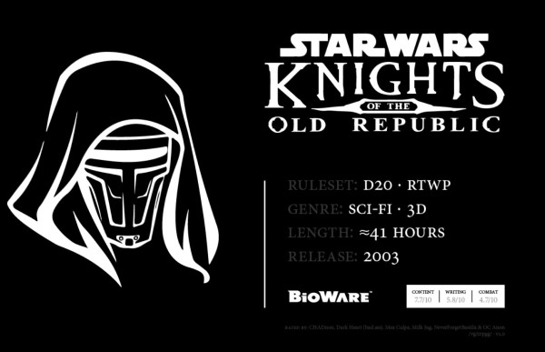
What is Star Wars: Knights of the Old Republic
Knights of the Old Republic is the first computer RPG set in the Star Wars universe. It uses the d20 System, from the Wizards of the Coast Star Wars Roleplaying Game rules. The game also allows the player to either be a servant to the light side of the Force or the dark side, using an alignment system that tracks actions, from simple dialogue choices to major plot decisions. Combat is turn-based. Time is divided into discrete rounds, and combatants attack/react simultaneously. However, the number of actions a combatant may perform each round is limited. While the round's duration is a fixed short interval of real time (around six seconds), the player can configure the combat system to pause at specific events or at the end of each round. In total there about two games.
What is D20
The d20 System is a role-playing game system published in 2000 by Wizards of the Coast, originally developed for the third edition of Dungeons & Dragons. The system is named after the 20-sided dice which are central to the core mechanics of many actions in the game. Much of the d20 System was released as the System Reference Document (SRD) under the Open Game License (OGL) as Open Game Content (OGC), which allows commercial and non-commercial publishers to release modifications or supplements to the system without paying for the use of the system's associated intellectual property, which is owned by Wizards of the Coast.
Learn more about D20 here.
What is the story of Knights of the Old Republic
A soldier of the Galactic Republic wakes up to find themselves in the middle of a battle on the Hammerhead-class capital ship, the Endar Spire, which is on a mission under the Jedi Sentinel Bastila Shan. Trask Ulgo, another Republic soldier, aids his escape from the doomed vessel and splits off to face Darth Malak's apprentice Darth Bandon. Trask seals the door behind him and buys his brother in arms time to escape. After entering the starboard section and finding Carth Onasi in the escape pod bay, the two join up and crash-land on the Sith-occupied ecumenopolis of Taris.
Where to buy:
Steam
GoG
Wiki
Mods: Nexus ModdB
What is the story of Knights of the Old Republic 2
Knights of the Old Republic 2 is the second sequel to the critically acclaimed Knights of the Old Republic. It picks up years later after the game's conclusion. It has been five years since the conclusion of Star Wars: Knights of the Old Republic. The Republic is in disarray following the defeat of the Sith. The remnants of Darth Malak's Sith Empire divided into numerous factions under several different leaderships, all with one common goal: the total extermination of the Jedi Order. What had become of Revan, the hero of the previous story, is unknown.
Where to buy:
Steam
GoG
Wiki
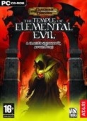
What is Temple of Elemental Evil
ToEE is the second game made by Troika games. It is an adaptation of the classic Greyhawk adventure of the same name written by Gary Gygax. It had nowhere near the commercial success of Arcanum. However, ToEE was one of the most faithful reproductions of 3rd edition D&D at it's time. You choose party alignment, create a party of adventurers, and you start the game with an intro based on that alignment.
What is D&D 3E
Published in 2000 with it's 3.5 Edition being released in 2003, this edition would replace THAC0 with a newly ubiquitous D20 mechanic for determining the outcome of rolls. This edition would boast the inclusion of over 200 playable races, 52 unique bases classes and 782 officially recognized prestige classes.
Learn more about D&D 3E here.
What is the story of the Temple of Elemental Evil
After the introduction based on your alignment, your party heads off to the village of Hommlet. Somethings are stirring up in relation to the Temple of Elemental Evil. Your party is about to find itself in the middle of it. You can tryto help the townsfolk, or perhaps you can murder everyone in town. The choice is yours.
Where to buy:
GoG
Mods: Moddb Circle of 8
Guide
Circle of 8 & temple+ installation guide
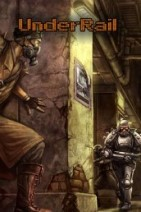
What is Underrail
Underrail is an old school isometric turn-based RPG set in a distant future, where life on Earth’s surface has long since been made impossible and the remnants of humanity now dwell in the Underrail, a vast system of metro station-states that, it seems, are the last bastions of a fading race.
Learn more about Underrail here.
What is the story of Underrail
The player takes control of one of the denizens of such a station-state whose life is about to become all that much more interesting and dangerous, as our protagonist is caught midst the conflicting factions of Underrail as they violently struggle to survive in the harsh underground environment.
Where to buy:
Steam
GoG
Underrail: Expedition
This DLC expands the base campaign with many new waterway maps that connect various harbors of the Underrail as well as adds huge new region called the Black Sea, a massive underground body of water. Take a break from the usual metro-crawling to take a boat to this infamous place. There, among the old and mysterious ruins of an age long past, you’ll face the vicious fauna, hostile natives, cunning pirates, and something far more sinister than all of those.
Where to buy:
Steam
GoG
Forum
Underrail Builder
Builds
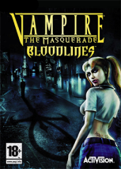
What is Vampire: The Masquerade
Vampire: The Masquerade is a tabletop role-playing game created by Mark Rein-Hagen and released in 1991 by White Wolf Publishing as the first of several Storyteller System games for its World of Darkness setting line. It is set in a fictionalized "gothic-punk" version of the modern world, where players assume the roles of vampires, who are referred to as "Kindred", and deal with their night-to-night struggles against their own bestial natures, vampire hunters and each other
Learn more about Vampire: The Masquerade here.
What is Vampire the Masquerade: Bloodlines
One of the three games in which Troika Games developed. Bloodlines can be played through either the first person perspective or the third person perspective. In the game the player can assigns their character to one of several vampire clans—each with unique powers, customizes their combat and dialog abilities and progresses through Bloodlines using violent and nonviolent methods. The selection of clan affects how the player is perceived in the game world, and which powers and abilities they possess; this opens up different avenues of exploration and methods of interacting with or manipulating other characters. The player is able to complete side missions away from the primary storyline by moving freely between the available hubs: Santa Monica, Hollywood, downtown Los Angeles, and Chinatown.
What is the story of Vampire the Masquerade: Bloodlines
While having a sexy night of debauchery. You unexpectedly find yourself in the clutches of a vampire. Against your will, you are turned into one. And before you know it, the Camarilla kidnap you before you can even react. Your sire broke one of the scared rules of the Camarilla, and as a result, was put to the cross. Thus leaving you by yourself. Before you too can be executed, Nines Rodriguez intervenes. Thus sparing you. However, rather then letting walk you away. The head honcho deems it more appropriate for you to prove yourself by sending you off on a suicide mission. Take part in a dark and gritty RPG as you learn about the various vampire factions competing for power within the city all while exposing yourself to the depravity of the night children....
Where to buy:
Steam
GoG
Unofficial Patch
Camarilla Edition Mod
Clan Quest Mod
Antitribu Mod
Final Nights Mod
Wiki
Modding Resources: Nexus Planet Vampire Moddb
What is Vampire: The Masquerade – Bloodlines 2
It's a upcoming action role-playing video game developed by Hardsuit Labs and published by Paradox Interactive. Part of the World of Darkness series, the game is based on White Wolf Publishing's tabletop role-playing game Vampire: The Masquerade and is the sequel to the 2004 video game Vampire: The Masquerade – Bloodlines
Where to buy:
Steam
GoG
What is Vampire the Masquerade: Redemption
Vampire: The Masquerade - Redemption is a computer role-playing game for the PC and Mac platforms, the first computer game to be set in the World of Darkness. It was developed by Nihilistic Software and published by Activision in 2000.
What is the story of Vampier: The Masquerade - Redemption
Before your fall, you led a crusade against evil. Now you've become one of the undead creatures you once battled - a Vampire. Inhabiting the World of Darkness, you must face a series of brutal confrontations with your nemesis Vukodlak, a powerful vampire lord. Your unholy showdown begins in medieval Europe and rages on into the modern day, as you track a soulless enemy in an eternal struggle to destroy him. For this is the only hope of vengeance for your tortured immortality.
Where to buy:
Steam
GoG
Wiki
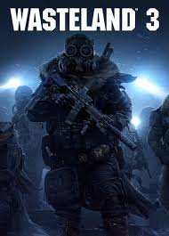
What is Wasteland 3
Wasteland 3 is a squad-based RPG from inXile entertainment, featuring challenging tactical turn-based combat and a deep, reactive story full of twists, turns, and brutal ethical decisions that will keep you hooked whether you’re a Wasteland veteran or new to the series. Create a squad of up to six Rangers and customize them with perks and abilities geared to your playstyle. You even get your own battle truck, which you can upgrade into a hardened war beast, bristling with weapons, to help mow down your enemies.
What is the story of Wasteland 3
You’re dispatched on a desperate quest from the scorching deserts to the snowy mountains to start from scratch, building a new base, finding a snow-worthy vehicle, training new recruits, and fighting your way through hostile frozen wastes. All the while, you'll have to decide who to trust in this land torn apart by corruption, intrigue, warring factions, crazed cultists, cutthroat gangs, and bitter sibling rivalries. Build a reputation for yourself by making decisions that will profoundly impact Colorado, its inhabitants and the story you experience. Will you be Colorado’s savior or its worst nightmare?
Where to buy:
Steam
GoG
Wiki
Forum